हमारे पर्यावरण में उपलब्ध प्रत्येक वस्तु जो हमारी आवश्यकताओं को पूरा करने में प्रयुक्त की जा सकती है, और जिसे बनाने के लिए **प्रौद्योगिकी (Technology)** उपलब्ध है, जो **आर्थिक रूप से संभाव्य (Economically Feasible)** और **सांस्कृतिक रूप से मान्य (Culturally Acceptable)** है, एक **'संसाधन' (Resource)** कहलाती है।
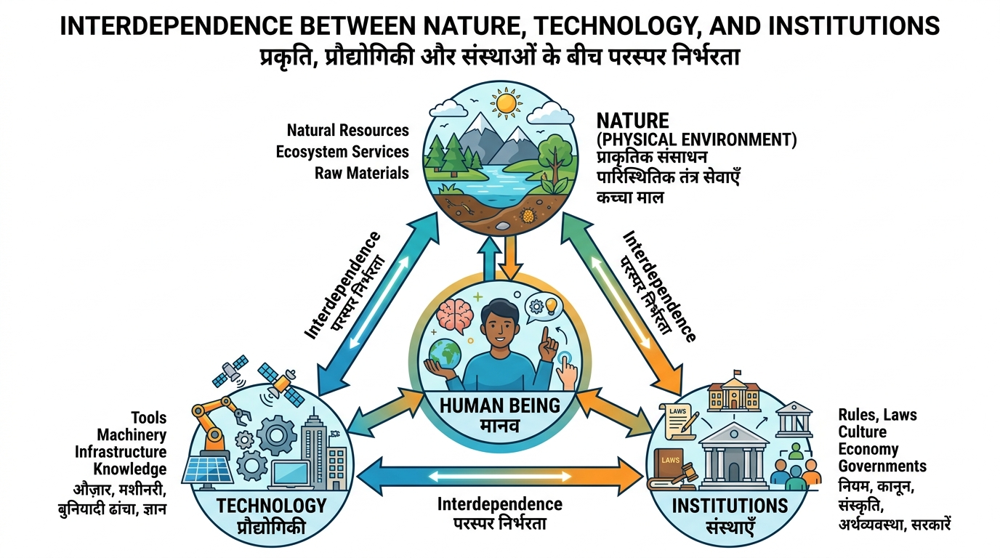
• क्या दर्शाता है: मानव (Human Being) केंद्र में रहकर प्रकृति (भौतिक पर्यावरण) से प्रौद्योगिकी द्वारा क्रिया करता है और अपने आर्थिक विकास की गति को तीव्र करने के लिए संस्थाओं (Institutions) का निर्माण करता है।
• भौगोलिक महत्व: संसाधन केवल प्रकृति के मुफ्त उपहार नहीं हैं, बल्कि मानव क्रियाओं का परिणाम हैं।
संसाधनों को उनकी उत्पत्ति, समाप्यता, स्वामित्व और विकास के स्तर के आधार पर निम्नलिखित प्रकार से वर्गीकृत किया जाता है:
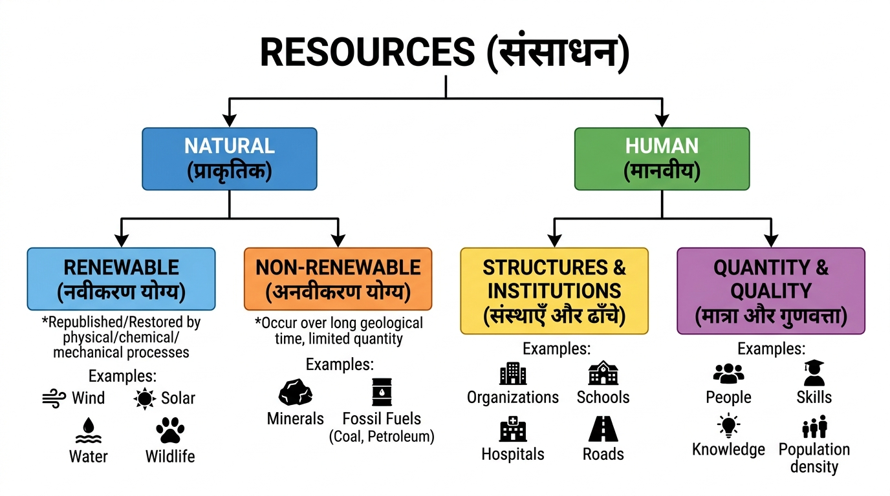
• मुख्य विभाजन: संसाधनों को दो प्रमुख वर्गों - प्राकृतिक (Natural) तथा मानवीय (Human) में बांटा जाता है।
• प्राकृतिक संसाधन: नवीकरण योग्य (सतत/प्रवाह जैसे पवन व जल, एवं जैव जैसे वन व वन्यजीव) और अनवीकरण योग्य (पुनः चक्रीय जैसे धातुएं, एवं अचक्रीय जैसे जीवाश्म ईंधन)।
• मानवीय संसाधन: संरचनाएं व संस्थाएं, तथा मात्रा व गुणवत्ता।
1. उत्पत्ति के आधार पर (On the basis of Origin):
- जैव संसाधन (Biotic Resources): इनकी प्राप्ति जीवमंडल (Biosphere) से होती है और इनमें जीवन व्याप्त होता है। उदाहरण: मनुष्य, वनस्पति जात, प्राणी जात, मतस्य जीवन, पशुधन आदि।
- अजैव संसाधन (Abiotic Resources): वे सभी संसाधन जो निर्जीव वस्तुओं से बने हैं। उदाहरण: चट्टानें, धातुएं, हवा, मिट्टी आदि।
2. समाप्यता के आधार पर (On the basis of Exhaustibility):
- नवीकरण योग्य संसाधन (Renewable Resources): वे संसाधन जिन्हें भौतिक, रासायनिक या यांत्रिक प्रक्रियाओं द्वारा पुनुरुत्पादित किया जा सकता है। उदाहरण: सौर ऊर्जा, पवन ऊर्जा, जल, वन व वन्य जीव।
- अनवीकरण योग्य संसाधन (Non-Renewable Resources): इन संसाधनों का विकास एक लंबे भू-वैज्ञानिक अंतराल में होता है। इनके निर्माण में लाखों वर्ष लगते हैं। उदाहरण: खनिज पदार्थ, कोयला, पेट्रोलियम (अचक्रीय संसाधन)।
3. स्वामित्व के आधार पर (On the basis of Ownership):
- व्यक्तिगत संसाधन: निजी व्यक्तियों के स्वामित्व वाले (उदा: खेत, मकान, बाग, कुएं)।
- सामुदायिक संसाधन: समुदाय के सभी सदस्यों को सुलभ (उदा: सार्वजनिक पार्क, पिकनिक स्थल, श्मशान भूमि, चरागाह)।
- राष्ट्रीय संसाधन: तकनीकी रूप से देश में मौजूद सभी संसाधन (कानूनी रूप से सरकार को लोकहित में अधिग्रहण का अधिकार)। तटरेखा से 12 समुद्री मील (22.2 किमी) तक का समुद्री क्षेत्र।
- अंतरराष्ट्रीय संसाधन: तटरेखा से 200 समुद्री मील (Exclusive Economic Zone) से परे खुले महासागरीय संसाधन, जिन पर अंतरराष्ट्रीय संस्थाओं की सहमति के बिना उपयोग संभव नहीं।
4. विकास के स्तर के आधार पर (On the basis of Development):
- संभावी संसाधन (Potential): जो किसी प्रदेश में विद्यमान हैं परंतु इनका उपयोग नहीं किया गया है (उदा: राजस्थान व गुजरात में सौर व पवन ऊर्जा की अपार संभावनाएं)।
- विकसित संसाधन (Developed): जिनका सर्वेक्षण किया जा चुका है और उनकी गुणवत्ता व मात्रा निर्धारित की जा चुकी है।
- भंडार (Stock): पर्यावरण में उपलब्ध वे पदार्थ जो मानव की आवश्यकताओं की पूर्ति कर सकते हैं परंतु उपयुक्त प्रौद्योगिकी के अभाव में पहुँच से बाहर हैं (उदा: जल में हाइड्रोजन व ऑक्सीजन का अपार ऊर्जा भंडार)।
- संचित कोष (Reserves): यह भंडार का ही हिस्सा है जिसे उपलब्ध तकनीकी ज्ञान की सहायता से प्रयोग में लाया जा सकता है परंतु इसका उपयोग अभी शुरू नहीं हुआ है (उदा: नदियों का जल, बांधों में जल, वन)।
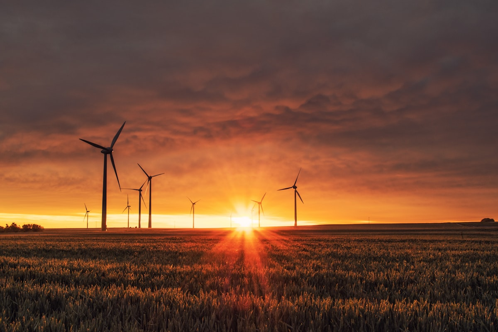
• क्या दर्शाता है: सौर ऊर्जा, पवन टरबाइन, स्वच्छ जल संसाधन और हरित कृषि का समन्वय जो भावी पीढ़ियों की आवश्यकताओं से समझौता किए बिना वर्तमान विकास सुनिश्चित करता है।
संसाधन जिस प्रकार मानव जीवन के लिए आवश्यक हैं, उसी प्रकार जीवन की गुणवत्ता बनाए रखने के लिए भी महत्वपूर्ण हैं। परंतु मानव ने इनका अंधाधुंध उपयोग किया है, जिससे निम्नलिखित मुख्य समस्याएं पैदा हुई हैं:
1. संसाधनों का ह्रास: कुछ लालची व्यक्तियों के कारण संसाधनों का तेजी से क्षय।
2. समाज का विभाजन: संसाधन कुछ ही हाथों में सिमट गए, जिससे समाज दो हिस्सों - 'संसाधन संपन्न' (अमीर) तथा 'संसाधनहीन' (गरीब) में बंट गया।
3. वैश्विक पारिस्थितिकीय संकट: ग्लोबल वॉर्मिंग (भूमंडलीय तापन), ओजोन परत क्षरण, पर्यावरण प्रदूषण और भू-निम्नीकरण का बढ़ना।
सतत पोषणीय विकास (Sustainable Development): इसका अर्थ है कि विकास पर्यावरण को नुकसान पहुँचाए बिना हो और वर्तमान विकास की प्रक्रिया भविष्य की पीढ़ियों की आवश्यकताओं की अवहेलना न करे।
• जून 1992: ब्राजील के रियो डी जेनेरो शहर में प्रथम अंतरराष्ट्रीय पृथ्वी सम्मेलन आयोजित हुआ, जिसमें 100 से अधिक देशों के राष्ट्राध्यक्षों ने भाग लिया।
• एजेंडा 21: इसका मुख्य उद्देश्य 21वीं सदी में भूमंडलीय सतत पोषणीय विकास हासिल करना है। प्रत्येक स्थानीय सरकार अपना स्थानीय 'एजेंडा 21' तैयार करे।
भारत जैसे विशाल देश में संसाधनों के वितरण में बहुत अधिक विविधता है। झारखंड, मध्य प्रदेश, छत्तीसगढ़ में खनिजों के प्रचुर भंडार हैं; राजस्थान में सौर ऊर्जा अधिक है परंतु जल की कमी है; लद्दाख में सांस्कृतिक विरासत समृद्ध है परंतु जल व अवसंरचना की कमी है। इसलिए राष्ट्रीय, राज्यीय और स्थानीय स्तर पर **संसाधन नियोजन (Resource Planning)** अति आवश्यक है।
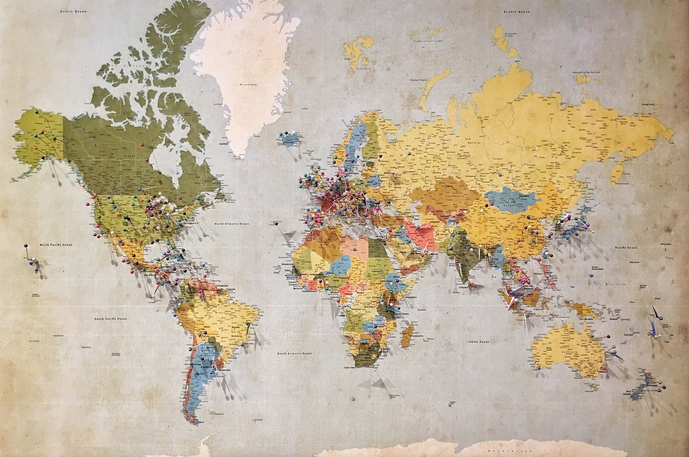
• प्रथम सोपान: देश के विभिन्न प्रदेशों में संसाधनों की पहचान कर तालिका बनाना (सर्वेक्षण, मानचित्रण, गुणात्मक व मात्रात्मक अनुमान)।
• द्वितीय सोपान: संसाधन विकास योजनाएं लागू करने के लिए उपयुक्त प्रौद्योगिकी, कौशल और संस्थागत नियोजन ढांचा तैयार करना।
• तृतीय सोपान: संसाधन विकास योजनाओं और राष्ट्रीय विकास योजनाओं में समन्वय स्थापित करना।
"हमारे पास हर व्यक्ति की आवश्यकता पूर्ति के लिए बहुत कुछ है, लेकिन किसी के लालच की पूर्ति के लिए कुछ नहीं।" (There is enough for everybody's need, but not for anybody's greed.)
गांधीजी के अनुसार विश्व स्तर पर संसाधन ह्रास के लिए लालची और स्वार्थी व्यक्ति तथा आधुनिक प्रौद्योगिकी की शोषणात्मक प्रवृत्ति जिम्मेदार है।
भूमि एक अत्यंत महत्वपूर्ण प्राकृतिक संसाधन है। यह प्राकृतिक वनस्पति, वन्य जीवन, मानव जीवन, आर्थिक क्रियाएं, परिवहन तथा संचार व्यवस्थाओं को आधार प्रदान करती है। परंतु भूमि एक सीमित संसाधन है, इसलिए इसका उपयोग सावधानीपूर्वक और योजनाबद्ध तरीके से होना चाहिए।
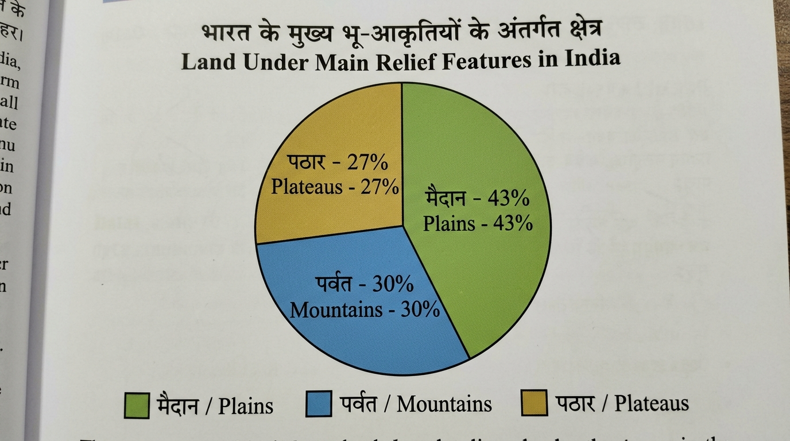
• मैदान (Plains - 43%): कृषि और उद्योग के विकास के लिए अत्यंत सुविधाजनक।
• पर्वत (Mountains - 30%): बारहमासी नदियों के प्रवाह को सुनिश्चित करते हैं, पर्यटन व पारिस्थितिकी के लिए महत्वपूर्ण।
• पठार (Plateaus - 27%): खनिजों, जीवाश्म ईंधन और वनों का अपार संचित कोष।
भारत का कुल भौगोलिक क्षेत्रफल **32.8 लाख वर्ग किलोमीटर** है। परंतु इसके केवल **93% भाग** के ही भू-उपयोग आंकड़े उपलब्ध हैं (पूर्वोत्तर राज्यों व पाक/चीन अधिकृत क्षेत्रों को छोड़कर)।
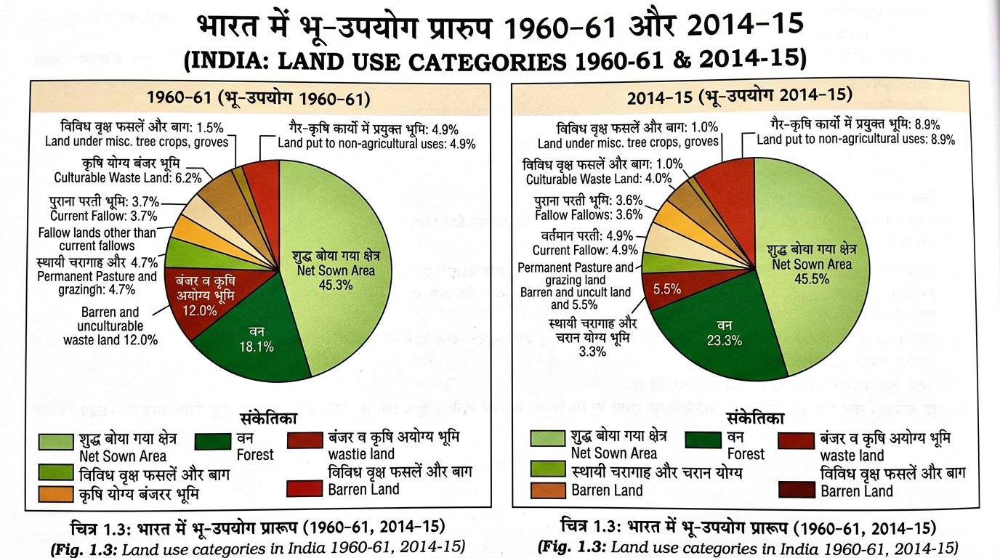
• वन क्षेत्र (Forest Area): 1960-61 में 18.11% से बढ़कर 2014-15 में 23.3% हुआ, परंतु यह राष्ट्रीय वन नीति 1952 द्वारा निर्धारित **33% पारिस्थितिकीय संतुलन सीमा** से बहुत कम है।
• शुद्ध बोया गया क्षेत्र (Net Sown Area): भारत में लगभग 45.5% है। पंजाब और हरियाणा में 80% से अधिक भूमि पर खेती होती है, जबकि अरुणाचल प्रदेश, मिजोरम, मणिपुर और अंडमान-निकोबार में यह 10% से भी कम है।
| भू-उपयोग वर्ग (Land Category) | 1960-61 (प्रतिशत) | 2014-15 (प्रतिशत) | भौगोलिक टिप्पणी |
|---|---|---|---|
| 1. वन (Forest) | 18.1% | 23.3% | वांछित 33% सीमा से कम। |
| 2. बंजर व कृषि अयोग्य भूमि | 18.1% | 5.5% | पहाड़, मरुस्थल, चट्टानी भूमि। |
| 3. गैर-कृषि कार्यों में प्रयुक्त | 4.9% | 8.9% | बस्तियां, सड़कें, कारखाने, रेल। |
| 4. स्थायी चरागाह भूमि | 4.7% | 3.3% | पशुधन के लिए चरागाह घटे हैं। |
| 5. शुद्ध बोया गया क्षेत्र (NSA) | 46.2% | 45.5% | देश की मुख्य कृषि भूमि। |
हमारी 95% मूल आवश्यकताएं (भोजन, मकान, कपड़ा) भूमि से ही प्राप्त होती हैं। मानव क्रियाकलापों के कारण न केवल भूमि का निम्नीकरण हो रहा है, बल्कि भूमि को नुकसान पहुँचाने वाली प्राकृतिक ताकतों को भी बल मिला है। भारत में लगभग **13 करोड़ हेक्टेयर भूमि निम्नीकृत (Degraded Land)** है।

• निम्नीकरण के मुख्य कारण:
1. खनन (Mining): झारखंड, ओडिशा, म.प्र., छत्तीसगढ़ में अति-खनन से भूमि विनाश।
2. अति पशुचारण (Overgrazing): गुजरात, राजस्थान, महाराष्ट्र में मुख्य कारण।
3. अति सिंचाई (Over-irrigation): पंजाब, हरियाणा, प.उ.प्र. में जलाक्रांतता (Waterlogging) से मृदा में लवणता व क्षारियता बढ़ना।
4. औद्योगिक अपशिष्ट: सीमेंट उद्योग में चूना पत्थर पीसने से निकली धूल भूमि पर जमकर जल अवशोषण रोकती है।
• संरक्षण के उपाय: वनारोपण, चरागाहों का प्रबंधन, रक्षक मेखला, खनन नियंत्रण और औद्योगिक जल का विसर्जन से पूर्व शोधन।
मृदा (मिट्टी) सबसे महत्वपूर्ण नवीकरण योग्य प्राकृतिक संसाधन है। यह पौधों के विकास का माध्यम है जो पृथ्वी पर विभिन्न प्रकार के जीवों का पोषण करती है। मृदा बनने की प्रक्रिया में **उच्चावच, जनक शैल (Parent Rock), जलवायु, वनस्पति, समय तथा सूक्ष्मजीव** मुख्य कारक हैं।
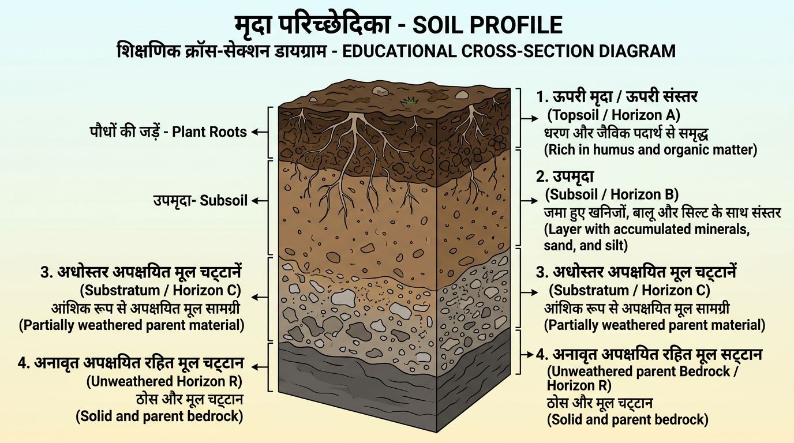
• 1. ऊपरी मृदा (Topsoil): ऊपरी संस्तर जो ह्यूमस और जैविक पदार्थों से भरपूर होता है (पौधों की जड़ें)।
• 2. उपमृदा (Subsoil): बालू, गाद (Silt) और मृतिका (Clay) से युक्त संस्तर।
• 3. अधोस्तर अपक्षयित मूल चट्टानें (Substratum): आंशिक रूप से अपक्षयित चट्टानी सामग्री।
• 4. अनवीकृत मूल चट्टान (Bedrock): ठोस अपक्षय रहित मूल चट्टान।
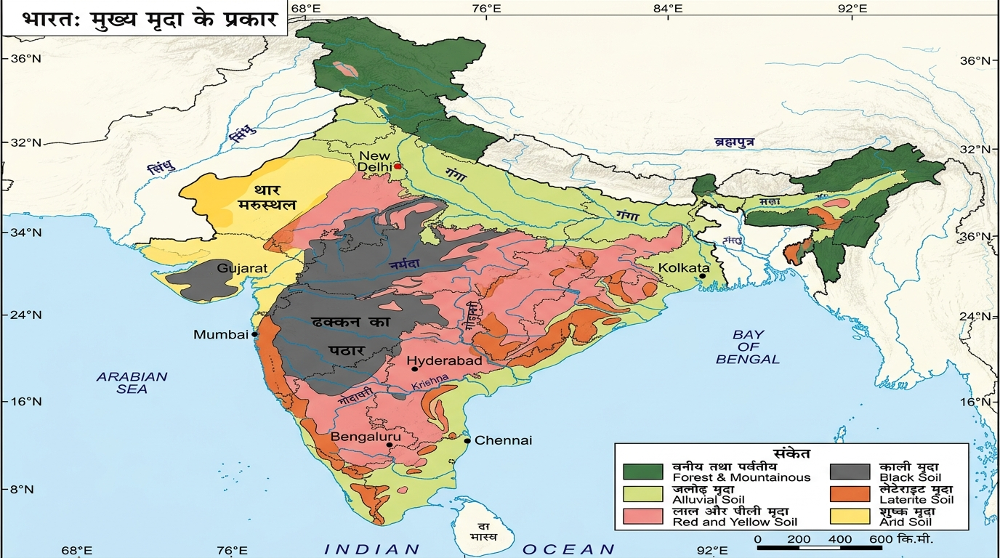
• मानचित्र भारत की 6 मुख्य मृदाओं के भौगोलिक वितरण को दर्शाता है: जलोढ़, काली, लाल व पीली, लेटेराइट, शुष्क (मरुस्थलीय) और वनीय/पर्वतीय मृदा।
1. जलोढ़ मृदा (Alluvial Soil):
यह भारत की सबसे विस्तृत और अत्यंत महत्वपूर्ण मृदा है (संपूर्ण उत्तरी मैदान)। यह सिंधु, गंगा और ब्रह्मपुत्र नदियों द्वारा लाए गए निक्षेपों से बनी है। पूर्व तटीय मैदानों में महानदी, गोदावरी, कृष्णा और कावेरी डेल्टा में भी पाई जाती है।
- आयु के आधार पर वर्गीकरण:
• बांगर (Old Alluvium): पुराना जलोढ़, इसमें 'कंकर' ग्रंथियों की मात्रा अधिक होती है।
• खादर (New Alluvium): नया जलोढ़, बांगर की तुलना में अधिक महीन व उपजाऊ होता है। - पोषक तत्व: पोटाश, फास्फोरस और चूना युक्त। गन्ना, चावल, गेहूं और दलहन फसलों के लिए सर्वोत्तम।

• जलोढ़ मृदा वाले क्षेत्रों में गहन कृषि (Intensive Agriculture) की जाती है, जिससे यहाँ जनसंख्या घनत्व बहुत अधिक है।
2. काली मृदा (Black Soil / Regur Soil):
इन मृदाओं का रंग काला होता है और इन्हें **'रेगुर मृदा' (Regur Soil)** भी कहा जाता है। यह **कपास (Cotton)** की खेती के लिए आदर्श मानी जाती है, इसलिए इसे 'काली कपास मृदा' भी कहते हैं।
- भौगोलिक विस्तार: दक्कन ट्रैप (बेसाल्ट) क्षेत्र के उत्तर-पश्चिमी भागों में (महाराष्ट्र, सौराष्ट्र, मालवा, मध्य प्रदेश और छत्तीसगढ़ के पठार)।
- विशेषताएं: यह बहुत महीन कणों (मृतिका/Clayey) से बनी है। इसकी नमी धारण करने की क्षमता (Moisture retention) बहुत अधिक होती है। शुष्क मौसम में इसमें गहरी दरारें पड़ जाती हैं, जिससे वायु का सम्मिश्रण (Self-ploughing) हो जाता है।
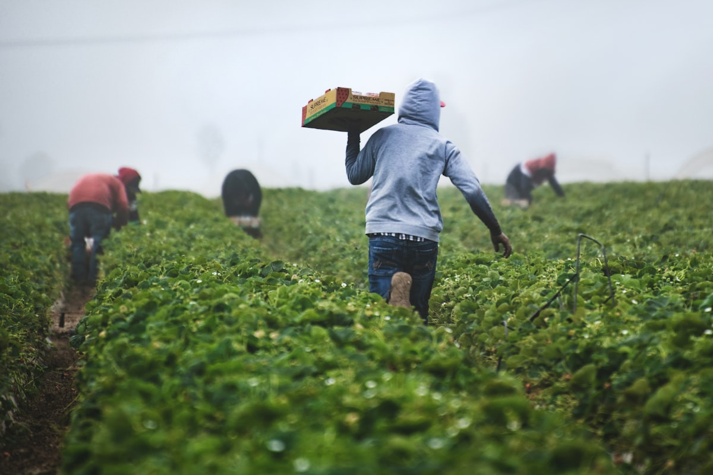
• गीली होने पर यह मृदा चिपचिपी हो जाती है, इसलिए पहली फुहार में ही इसकी जुताई कर दी जाती है। यह कैल्शियम कार्बोनेट, मैग्नीशियम, पोटाश और चूने से समृद्ध होती है (फास्फोरस की मात्रा कम)।
3. लाल और पीली मृदा (Red & Yellow Soil):
लाल मृदा दक्कन पठार के पूर्वी और दक्षिणी भागों में कम वर्षा वाले क्षेत्रों में क्रिस्टलीय आग्नेय चट्टानों पर विकसित होती है।
- रंग का कारण: आग्नेय और रूपांतरित चट्टानों में **लोहे के धातुओं के प्रसार (Diffusion of Iron)** के कारण इसका रंग लाल होता है। जलभराव या निर्जलीकरण के समय यह पीली दिखाई देती है।
- क्षेत्र: ओडिशा, छत्तीसगढ़, मध्य गंगा मैदान के दक्षिणी भाग और पश्चिमी घाट के पद-प्रदेश।
4. लेटेराइट मृदा (Laterite Soil):
लेटेराइट शब्द ग्रीक भाषा के शब्द 'Later' से लिया गया है जिसका अर्थ है **'ईंट'**। यह मृदा उच्च तापमान और अत्यधिक वर्षा वाले क्षेत्रों में विकसित होती है।
• निक्षालन (Leaching): भारी वर्षा से जैविक व घुलनशील तत्व बह जाते हैं। इसमें ह्यूमस की मात्रा बहुत कम होती है क्योंकि अत्यधिक तापमान के कारण जीवाणु नष्ट हो जाते हैं।
• उपयोग: सही मात्रा में खाद और उर्वरक डालकर कर्नाटक, केरल, तमिलनाडु में चाय व कॉफी, तथा तमिलनाडु/आंध्र प्रदेश में काजू की खेती की जाती है।
5. शुष्क एवं मरुस्थलीय मृदा (Arid Soil):

• विशेषताएं: रंग लाल से भूरा, बनावट में रेतीली व प्रकृति से लवणीय होती है। शुष्क जलवायु व उच्च तापमान के कारण वाष्पीकरण दर अधिक होती है, जिससे ह्यूमस और नमी की कमी होती है।
• कंकर परत: निचली परतों में कैल्शियम की मात्रा बढ़ने के कारण 'कंकर' की परत पाई जाती है जो जल के अंतःस्यंदन (Infiltration) को रोकती है। पश्चिमी राजस्थान में इंदिरा गांधी नहर द्वारा सिंचाई करके इसे कृषि योग्य बनाया गया है।
6. वनीय एवं पर्वतीय मृदा (Forest Soil):

• यह मृदा पर्याप्त वर्षा वाले पर्वतीय पर्यावरण में पाई जाती है। नदी घाटियों में यह मृदा दोमट (Loamy) और सिल्टदार होती है, परंतु ऊपरी ढालों पर इसका गठन मोटे कणों का होता है। हिमालय के बर्फाच्छादित क्षेत्रों में इसका अपरदन होता है और यह अम्लीय तथा ह्यूमस रहित होती है।
मृदा के कटाव और उसके बहाव की प्रक्रिया को **'मृदा अपरदन' (Soil Erosion)** कहा जाता है। मृदा बनने और अपरदन की क्रियाएं आमतौर पर साथ-साथ चलती हैं और दोनों में संतुलन होता है। परंतु मानव क्रियाओं (वनोन्मूलन, अति-पशुचारण, निर्माण, खनन) से यह संतुलन बिगड़ जाता है।
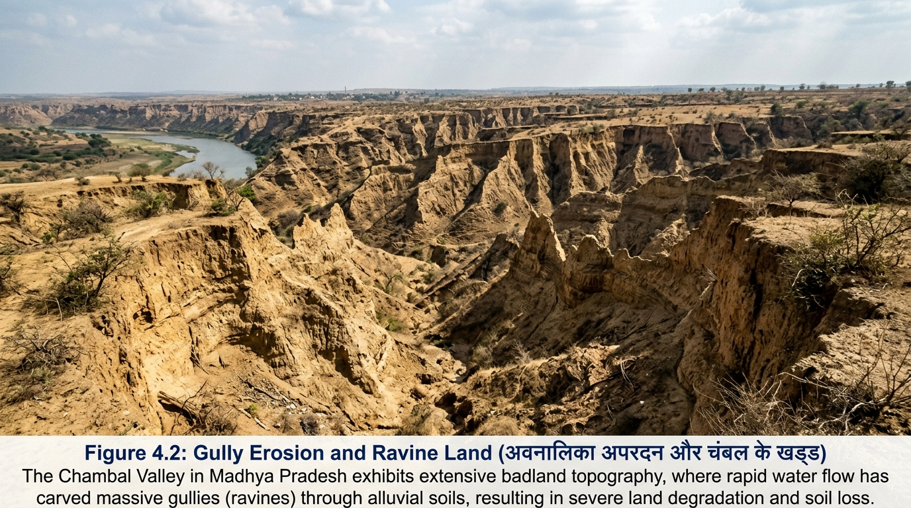
• अवनालिका अपरदन (Gully Erosion): बहता जल मृत्तिका युक्त मृदाओं को काटते हुए गहरी वाहिकाएं बनाता है जिन्हें 'अवनालिकाएं' कहते हैं। ऐसी भूमि जो जोतने योग्य नहीं रहती उसे **'खड्ड भूमि' (Badland)** कहते हैं। चंबल बेसिन में ऐसी भूमि को **'बीहड़' या 'खड्ड' (Ravines)** कहा जाता है।
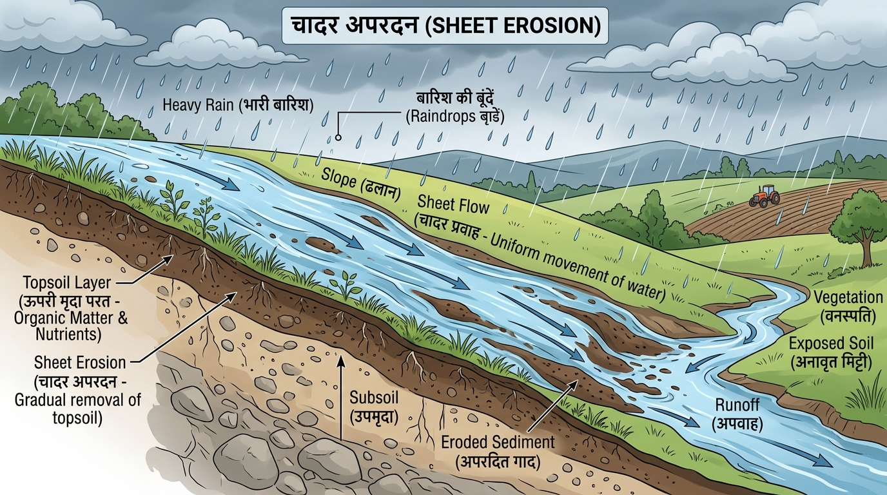
• चादर अपरदन (Sheet Erosion): कई बार जल विस्तृत क्षेत्र को ढके हुए ढाल के साथ नीचे की ओर बहता है। ऐसे में इस क्षेत्र की ऊपरी मृदा घुलकर जल के साथ बह जाती है। इसे 'चादर अपरदन' कहते हैं।
• पवन अपरदन (Wind Erosion): पवन द्वारा ढालू या समतल क्षेत्र से मृदा को उड़ा ले जाने की प्रक्रिया।
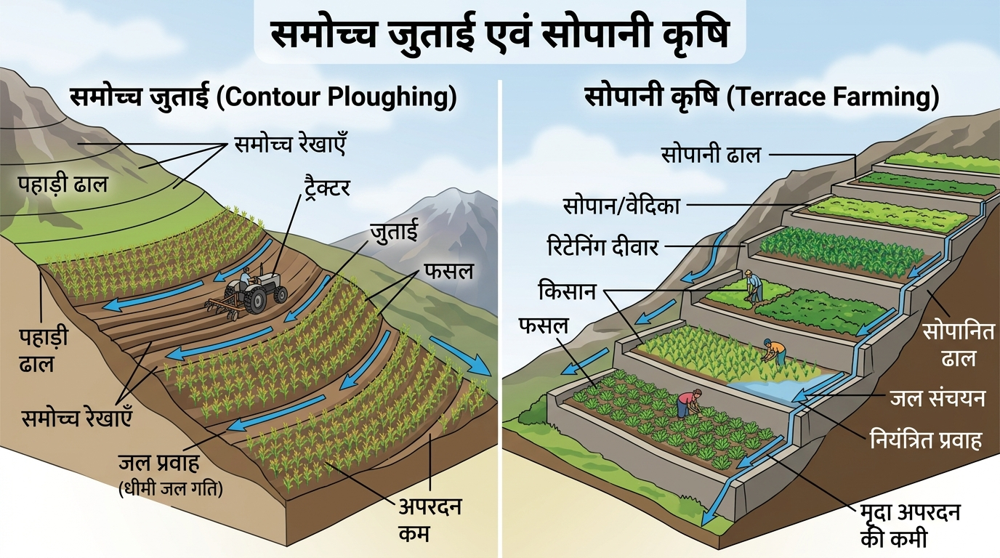
• 1. समोच्च जुताई (Contour Ploughing): ढालू भूमि पर समोच्च रेखाओं के समानांतर हल चलाने से ढाल के साथ जल बहाव की गति घटती है।
• 2. सोपानी / सीढ़ीदार कृषि (Terrace Farming): ढालों पर सीढ़ियां बनाकर खेती की जाती है। पश्चिमी और मध्य हिमालय में सोपान अथवा सीढ़ीदार कृषि काफी विकसित है।

• 3. पट्टी कृषि (Strip Cropping): बड़े खेतों को पट्टियों में बांटा जाता है। फसलों के बीच में घास की पट्टियां उगाई जाती हैं जो हवा के बल को तोड़ती हैं।
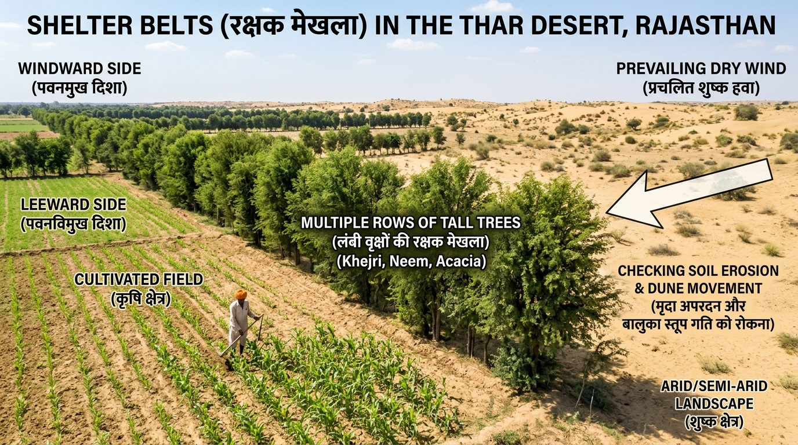
• 4. रक्षक मेखला (Shelter Belts): पेड़ों को कतारों में लगाकर रक्षक मेखला बनाना। इन रक्षक पट्टियों ने रेतीले टीलों के स्थिरीकरण में (पश्चिमी भारत के मरुस्थल) महत्वपूर्ण योगदान दिया है।
| मृदा का प्रकार (Soil Type) | मुख्य क्षेत्र (Regions) | मुख्य विशेषताएं (Key Characteristics) | उपयुक्त फसलें (Crops) |
|---|---|---|---|
| 1. जलोढ़ मृदा (Alluvial) | उत्तरी मैदान, पंजाब, यूपी, बिहार, तटीय डेल्टा | पोटाश व चूना प्रचुर, बांगर व खादर में विभाजित | गेहूं, चावल, गन्ना, दलहन |
| 2. काली मृदा (Black/Regur) | महाराष्ट्र, सौराष्ट्र, मालवा, मध्य प्रदेश | बसाल्ट लावा निर्मित, नमी धारकता अधिक, स्वायत्त जुताई | कपास, मूंगफली, सोयाबीन |
| 3. लाल व पीली मृदा | ओडिशा, छत्तीसगढ़, पश्चिमी घाट पद-प्रदेश | लोहे के प्रसार से लाल रंग, कम वर्षा क्षेत्र | मक्का, बाजरा, दालें |
| 4. लेटेराइट मृदा (Laterite) | कर्नाटक, केरल, तमिलनाडु, ओडिशा, असम | अत्यधिक निक्षालन (Leaching), ईंट जैसी सख्त, अम्लीय | चाय, कॉफी, काजू |
| 5. शुष्क मृदा (Arid) | पश्चिमी राजस्थान (जैसलमेर, बाड़मेर) | रेतीली व लवणीय, निचली परत में कंकर (कैल्शियम) | सिंचाई उपरांत बाजरा, सरसों |
| 6. वनीय मृदा (Forest) | हिमालयी क्षेत्र (जम्मू-कश्मीर, उत्तराखंड, सिक्किम) | नदी घाटियों में दोमट, ऊपरी ढाल पर मोटे कण | सेब, नाशपाती, अक्रोट, चाय |
• अंतरराष्ट्रीय मानक: 12 समुद्री मील (22.2 किमी) तक राष्ट्रीय संसाधन; 200 समुद्री मील से परे अंतरराष्ट्रीय संसाधन।
• राष्ट्रीय वन नीति 1952: पर्यावरण संतुलन हेतु 33% वन क्षेत्र आवश्यक।
• रियो सम्मेलन 1992: ब्राजील में 100+ राष्ट्राध्यक्ष, एजेंडा 21 की स्वीकृति।
• गांधीजी का कथन: "पेट भरने के लिए बहुत है, पेटी भरने के लिए नहीं।"
• चंबल खड्ड (Ravines): अवनालिका अपरदन द्वारा निर्मित उत्खात भूमि।
• मरुस्थल स्थिरीकरण: रक्षक मेखला (Shelter Belts) द्वारा बालुका स्तूपों को रोकना।